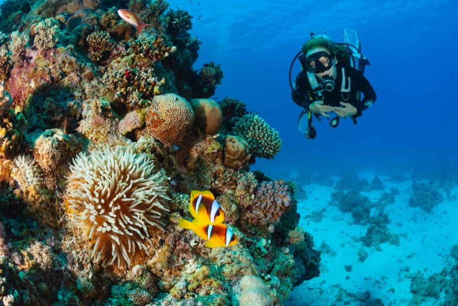
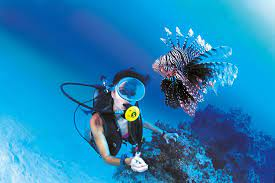
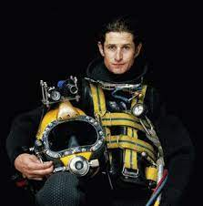

Дайвинг
Дайвинг,подводное плавание с аквалангом, маской и ластами как разновидность спортивно-туристического отдыха, времяпрепровождения. История подводного плавания берёт своё начало в античной мифологии, где рассказывалось о подвигах героев под водой.
Но более конкретные факты были получены только после начала XV века. Известно, что во время погружения, чтобы дышать под водой, использовали полый тростник.
Рекреационный дайвинг
это погружения на небольшую глубину (10-30 метров) с использованием баллонов.Это вид погружения служит только для удовольствия дайверов, для изучения красот подводного мира.
Технический дайвинг
Этот вид дайвинга подойдет далеко не всем, потому как это - высокотехничные погружения. Основной целью является изучение подводных пещер, затонувших кораблей и лодок на большой глубине.
Для технического дайвинга используется специальное оборудование. Особенностями является сложная подготовка к погружению, использование большого количества специального снаряжения.
Конечно, безопасность на первом месте, но дайвер получит невероятное удовольствие от погружения в таинственные глубины.
Коммерческий дайвинг
Этот вид дайвинга обычно используется для проведения различных подводных работ: сварка, крепление, установка конструкций, поднятие объектов и тому подобное. Глубина во время таких погружений может достигать до 600 метров.
В данном случае погружение осуществляется в колоколе или подводной камере. Коммерческий дайвинг - это неотъемлемая часть работ на морских и нефтяных платформах и сооружениях.
Особенностями такого вида погружений является специальная усиленная подготовка, хорошие теоретические и практические навыки,умение вести себя в рискованной ситуации.